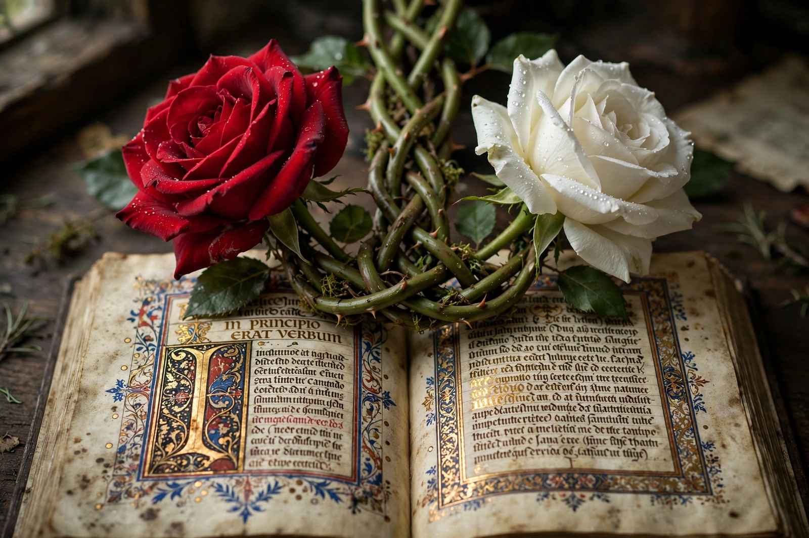

| Date | 22 May 1455 – 16 June 1487 |
|---|---|
| Location | England, Wales, Ireland, Calais |
| Combatants | House of Lancaster (red rose) vs. House of York (white rose) |
| Result | Victory for Henry Tudor; union of the houses by marriage; start of the Tudor dynasty |
| Major battles | St Albans, Towton, Barnet, Tewkesbury, Bosworth Field, Stoke Field |

The Wars of the Roses were a series of civil wars fought in England between 1455 and 1487 for control of the throne, between the rival cadet branches of the royal House of Plantagenet: the House of Lancaster, associated with a red rose, and the House of York, associated with a white rose. The name was coined later, popularised by Sir Walter Scott in the nineteenth century.
The conflict grew out of the weakness of King Henry VI, whose bouts of mental illness left government in the hands of competing factions, and out of England's defeat in the Hundred Years' War, social unrest, and the ambitions of Richard, Duke of York, who claimed the throne through descent from Edward III. The first battle, at St Albans in 1455, opened three decades of intermittent fighting.
York was killed at Wakefield in 1460, but his son seized the crown as Edward IV after the bloody Battle of Towton (1461) — often described as the largest battle ever fought on English soil. Edward was briefly deposed in 1470–71 when Henry VI was restored ("readeption"), then recovered the throne at Barnet and Tewkesbury. After Edward's death in 1483, his brother Richard III usurped the throne from the young Edward V, one of the "Princes in the Tower" who disappeared that year.
Henry Tudor, a Lancastrian claimant exiled in Brittany, invaded in 1485 and defeated and killed Richard III at the Battle of Bosworth Field — the last English king to die in battle. Crowned Henry VII, he married Elizabeth of York, uniting the two roses into the Tudor rose. A final Yorkist rising was crushed at Stoke Field in 1487, conventionally marking the end of the wars and of the medieval English monarchy.
The wars extinguished much of the old nobility and strengthened the Tudor state. They were dramatised in Shakespeare's history plays, from Henry VI to Richard III.